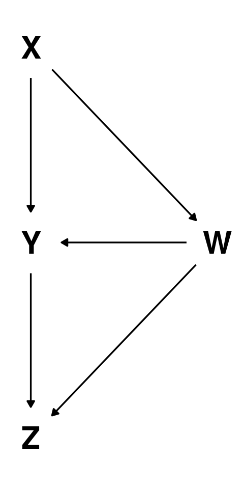
Introduction to causal reasoning with graphical models
Matteo Lisi
Outline
Causality and DAGs (Directed Acyclic Graphs)
Testable implications of DAGs
Estimating causal effects
Final thoughts
Causality and DAGs
Correlation does not imply causation!
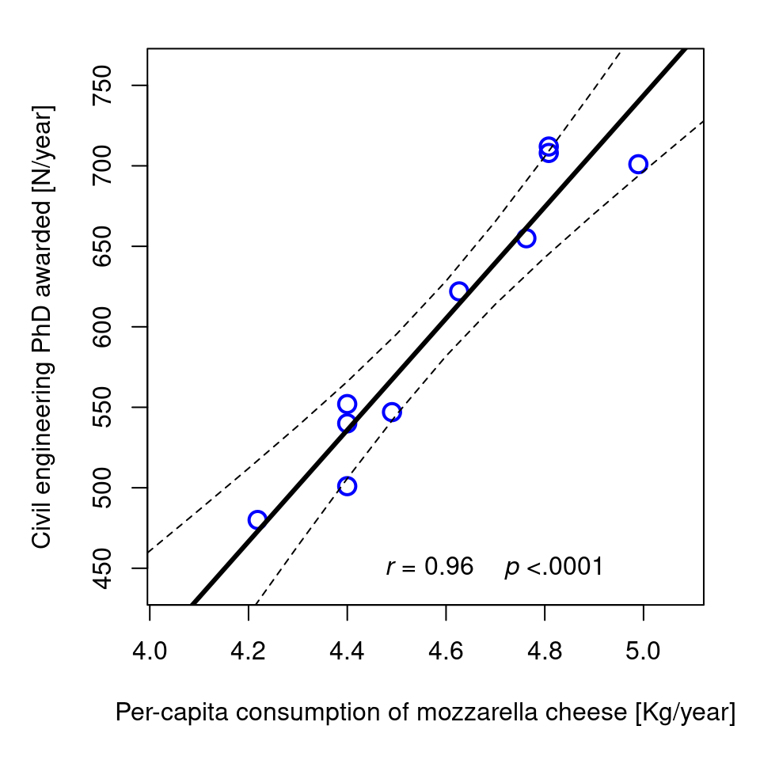Civil engineering doctorates awarded (in the US; source NSF) as a function of the per capita consumption of mozzarella cheese, measured from 2000 to 2009.
Causality
- Taboo against explicit causal language in observational studies.
- However, most research questions are ‘causal’.
- Papers inevitably include tentative or implicit hints at causality, with disclaimers (“future experiments are needed…”).
- Readers (especially non-specialists) often misled into causal conclusions when these are not warranted.
- There is need for a principled framework for thinking clearly about causality.
Characterising the role of neurons for behavior is a causal inference question.
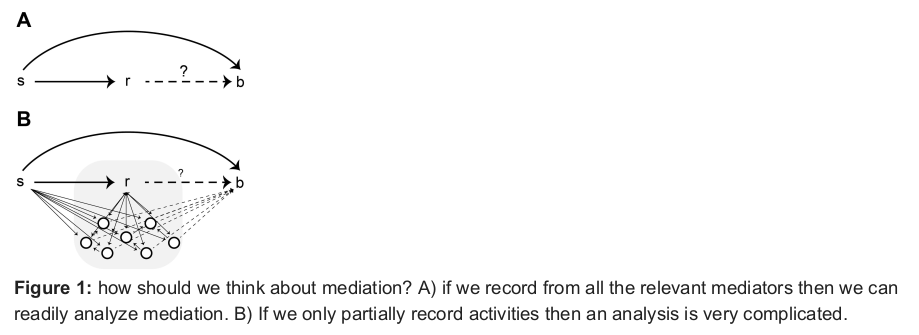
- Neural activity in LIP area was widely believed to causally mediate evidence accumulation in perceptual decision, until it was found it’s pharmacological inactivation had no effect on behavioural performance (Katz et al, Nature 2016)
Our sensory system routinely make inferences about causes of the sensory signals it receives.
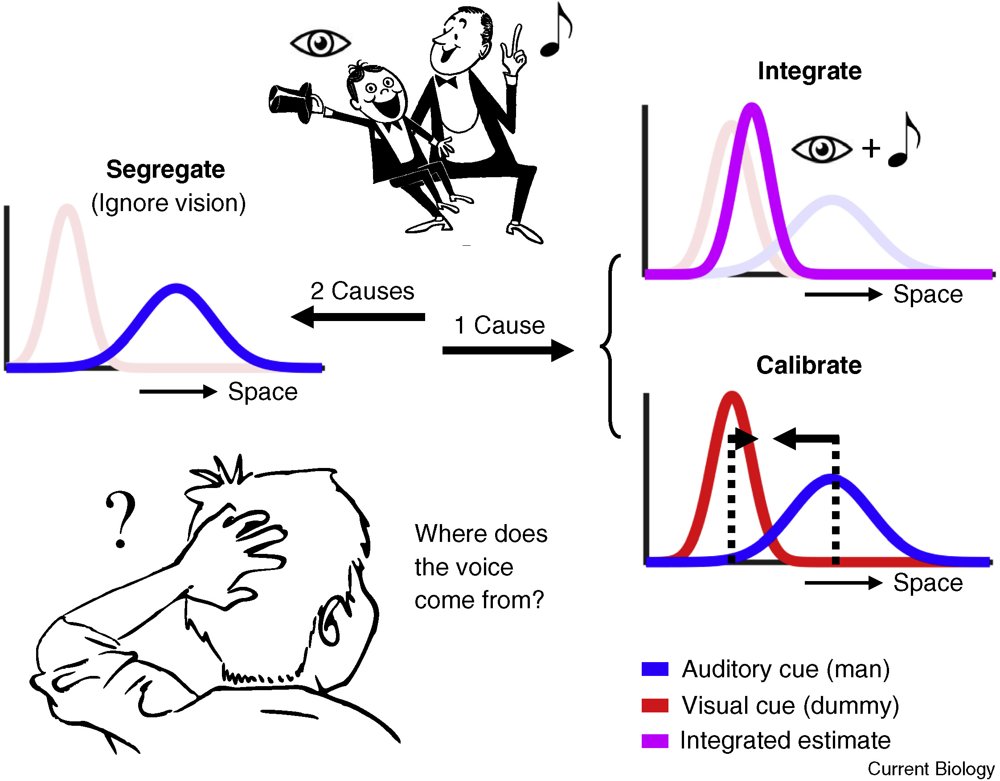
What is “causality”?
Everyone knows what causality is
(mozzarella cheese does not cause engineering PhDs;
if we intervene to increase consumption of mozzarella we would not expect this to have much influence on the number of PhDs awarded)
Hume (1748): “We may define a cause to be an object, followed by another, […] where, if the first object had not been, the second had never existed.”
Much of 20-th century developments in statistics mostly avoided causality
The word “cause” is not in the vocabulary of probability theory
Key questions
- How can we assess causality (especially when interventions are not possible)?
- What pattern of data and/or assumptions is required to convince people that a connection is causal?
Common cause principle
There is no causation without correlation (Reichenbach, 1956)
If \(X\) and \(Y\) are statistically dependent (\(X \not\!\perp\!\!\!\perp Y\))1,
then either:
- \(X\) causes \(Y\);
- \(Y\) causes \(X\);
- a third variable \(Z\) causes both \(X\) and \(Y\)
Common cause principle
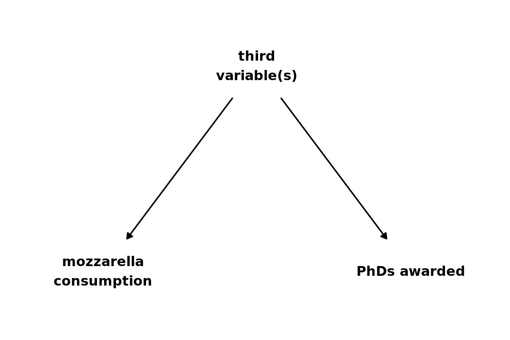Directed Acyclic Graphs (DAGs)
A collection of nodes and edges
Edges are directed arrows and indicates causal links.
A path is the set of nodes connecting any two nodes.
The node that a directed edge starts from is called the parent of the node that the edge goes into (child node).
More than 1 node separation: ancestor and descendant nodes.
Exogenous variables \(\{ X \}\) external variables not caused by the model.
Endogenous variables \(\{ Y, W, Z\}\) variables determined by other variables in the model.
Graphical definitions of causality
A parent variable is a direct cause of it’s child variables
(\(X\) is a direct cause of \(Y\)).An ancestor variable is an indirect or potential cause of its descendants
(\(X\) is a potential cause of \(Z\)).
Acyclicity in DAGs
Acyclicity may seem problematic in presence of feedback loops.
One way to deal with these is by adding nodes for repeated measures (e.g. crossed-lagged panel models)
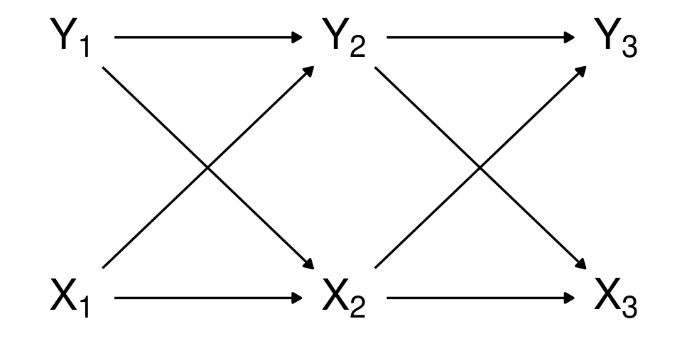
“Measurement” errors
Each variable in a DAG is usually assumed to be observed with some error (\(\epsilon_W, \epsilon_X, \ldots\)).
These errors are assumed to be independent from each other, and are usually not shown for simplicity
“The disturbance terms represent independent background factors that the investigator chooses not to include in the analysis” (Pearl, 2009)
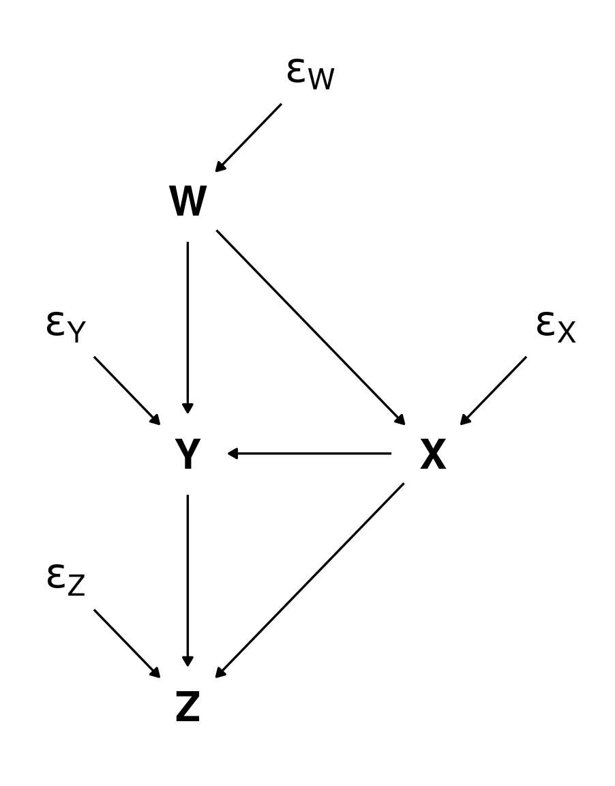
Product decomposition in DAGs
We can write the joint distribution of all variables in a DAG as the product of the conditional distributions \(p(\text{child} \mid \text{parents})\)
\[\begin{align*}p & (X, Y,W,Z) =\\ & p(Z∣W,Y) \, p(Y∣X,W) \, p(W∣X) \, p(X) \end{align*}\]
This holds regardless of the precise functional form of each “arrows”.
A DAG provides a blueprint defining a family of joint probability distributions over a set of variables.

Testable implications of DAGs
Conditiona/unconditional independencies
The structure of a DAG introduce constraints in the possible joint distribution of its variable that can be tested empirically.
Unconditional (in)dependencies: a DAG is a statement about which variables should (or should not) be associated with one another;
Conditional (in)dependencies a DAG states also which variables should become associated or non-associated when we condition on some other set of variables.
What does “conditioning on a variable” means?
Conditioning on a variable here can be understood as controlling for it.
Conditioning on \(Z\) when studying the link between \(X\) and \(Y\) means we introduce information about \(Z\) in our analysis and ask if \(X\) provide any additional information (above and beyond what we already have knowing \(Z\)).
\[Y \perp\!\!\!\perp X \mid Z\]
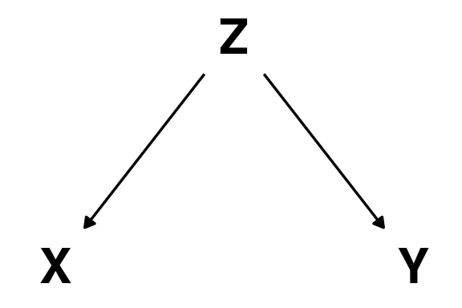
How to condition on / control for a variable in practice?
Stratified analysis
Inclusion as covariate in regression models
Matching
All methods of statistical control are affected by measurement errors in confounding variables.
Confounding
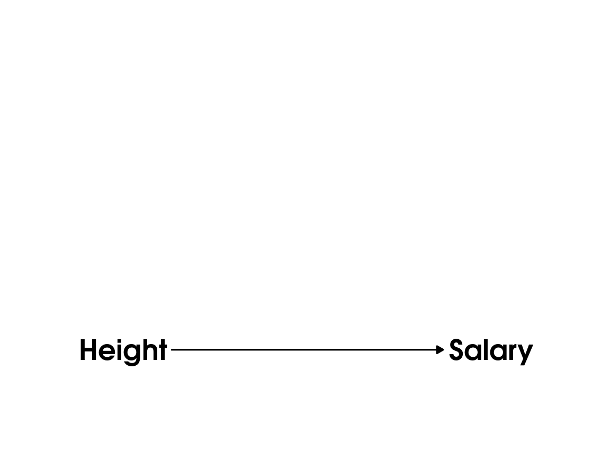
Confounding
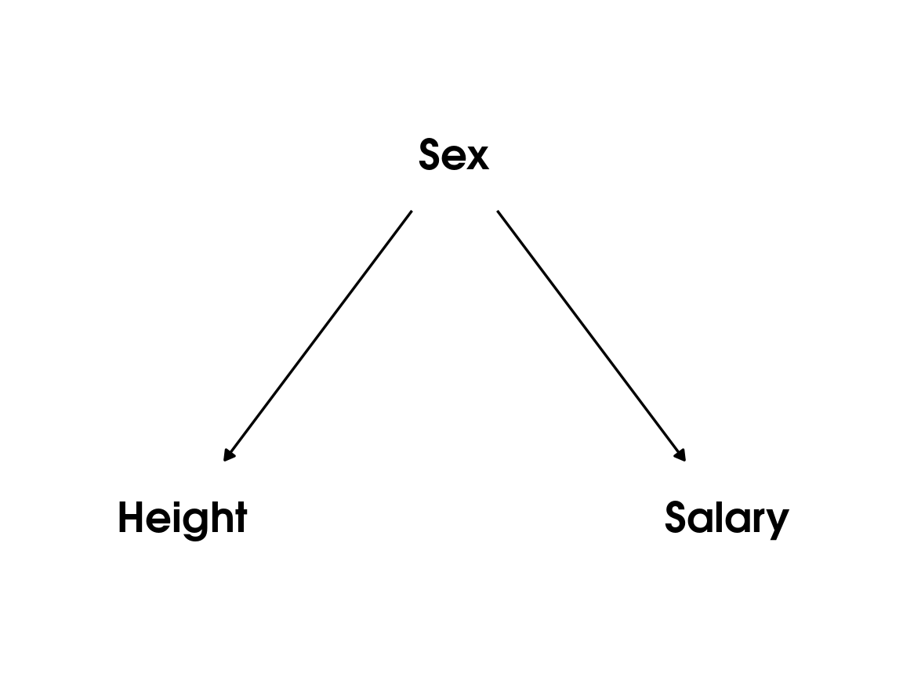
Colliders
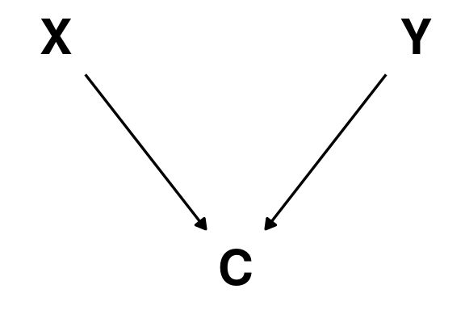
\(X\) and \(Y\) are independent of each other \(X \perp\!\!\!\perp Y\)
\(C\) is caused by both \(X\) and \(Y\)
They become dependent after we condition on the collider node \(C\);
(\(A \not\!\perp\!\!\!\perp B \mid C\))
Cake competition example
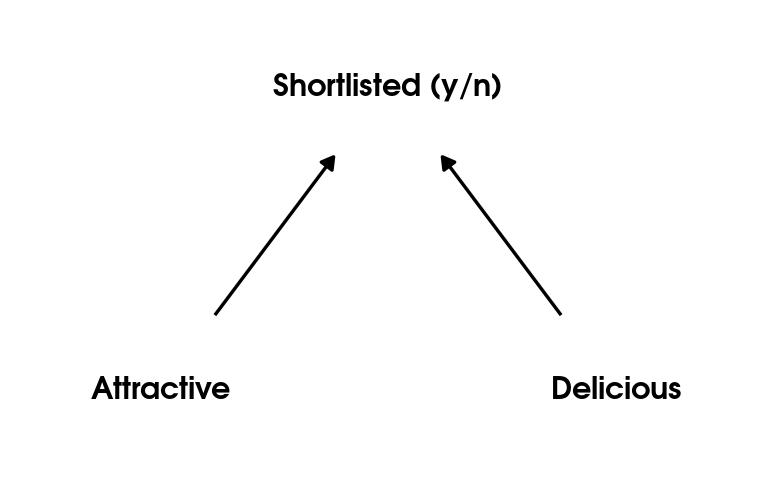
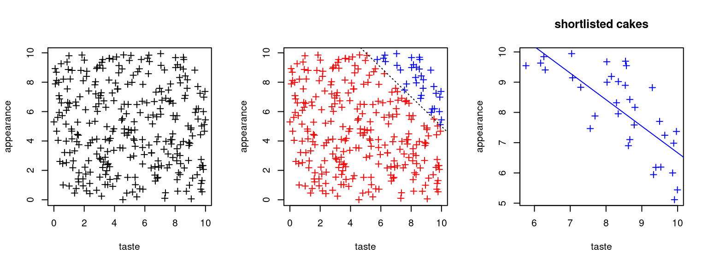
No association between
appearanceandtastein the ‘population’ of cakesappearanceandtastebecomes negatively correlated once we condition our analysis on whether a cake was shortlisted or not.
Conditional independencies in complex DAGS (D-separation)
Realistic causal models are more complex and have more than 1 path between variables.
D-separation (“D” stands for directional) is when some variables on a directed graphs are independent of others
Assuming we are not conditioning on any variable, two variables in a DAG are D-separated if all the paths between them contain a collider.
Paths that do not contains colliders implies a correlation (dependency) between variables.
Some examples are “fork” paths \(X \leftarrow Z \rightarrow Y\) or a “pipe” paths \(X \rightarrow Z \rightarrow Y\). These paths are said to be “open” and in order to “close” them (so as to D-separate \(X\) and \(Y\) and make them independent) we need to condition on \(Z\).
D-separation: example
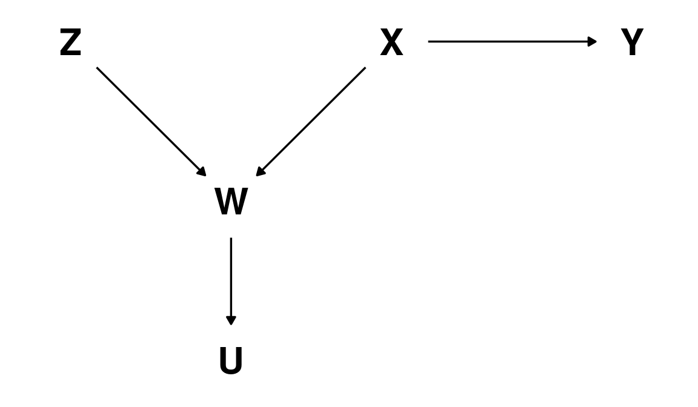
\(Z\) and \(Y\) are D-separated (unconditionally independent, \(Z \perp\!\!\!\perp Y\))
D-separation: example
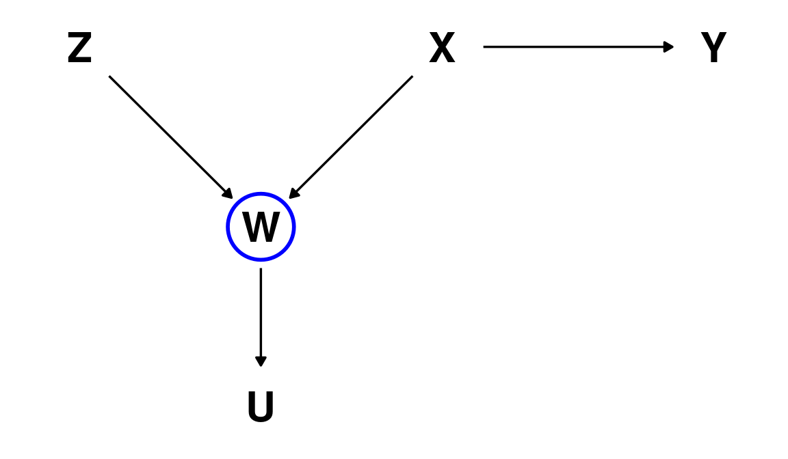
However, \(W\) is a collider node, so if we condition our analysis on \(W\) we would find a ‘spurious’ association between \(Z\) and \(Y\)
This association is ‘spurious’ because \(Y\) is not a descendant of \(Z\).
If we were to make an intervention on \(Z\) this would have no effect on \(Y\).
D-separation: example
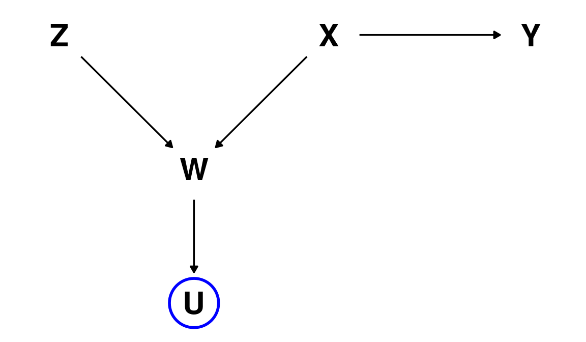
Conditioning on \(U\), the child of the collider node produces the same effect!
(formally \(Z \not\!\perp\!\!\!\perp Y \mid U\))
D-separation: example 2
Which variables that are D-separated (unconditionally independent) in this DAG?
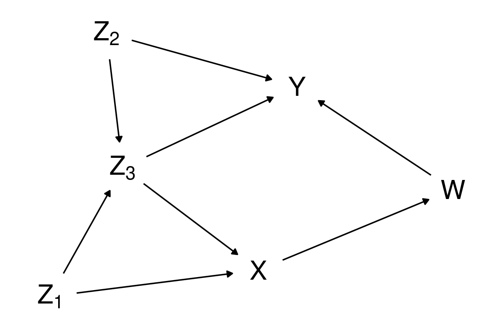
Only \(Z_1\) and \(Z_2\) are unconditionally independent ( \(Z_1 \perp\!\!\!\perp Z_2\)).
D-separation: example 2
Conditional on which variables are \(Z_1\) and \(W\) independent one another?
Conditioning on \(X\) makes \(Z_1\) and \(W\) independent one another (\(W \perp\!\!\!\perp Z_1 \mid X\)); all other paths are “blocked” by a collider.
Automatic analysis of DAGs with dagitty
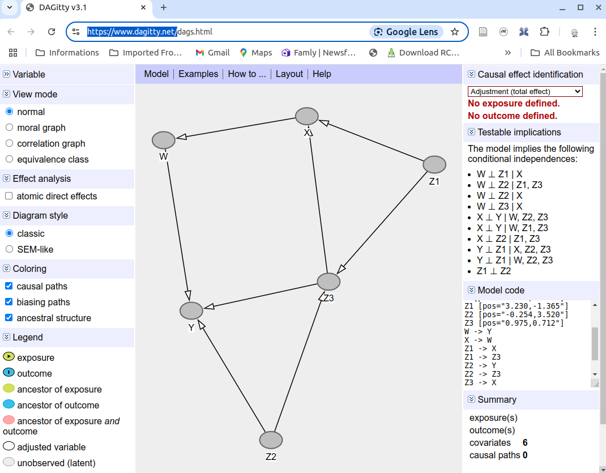Automatic analysis of DAGs with dagitty
dagitty is also available as an R package
Causal model testing
We can use D-separation to falsify and test our DAG model!
We have found that \(W \perp\!\!\!\perp Z_1 \mid X\)
(\(W\) is independent of \(Z_1\) conditional on \(X\))This implies that if we regress \(W\) on \(X\) and \(Z_1\), e.g. \[W = \beta_1 X + \beta_2 Z_1\]
we should find that \(\beta_2 \approx 0\).Finding that \(\beta_2\ne 0\) would indicate that \(W\) depends on \(Z_1\) given \(X\), implying that the DAG model is wrong.
More specifically, the DAG would be wrong because the ‘true’ model must have a path between \(W\) and \(Z_1\) that is not D-separated by \(X\)
D-separation: example 1 again
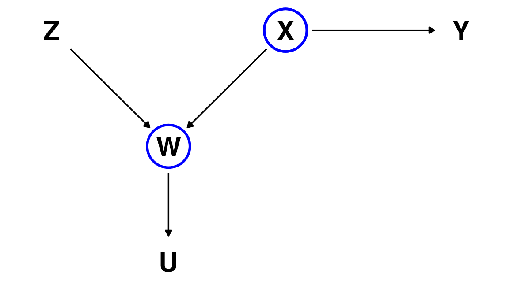
What happens if we condition on both \(W\) and \(X\)?
Conditioning on \(\{ W,X \}\) makes \(Z\) and \(Y\) conditionally independent.
\(Z \perp\!\!\!\perp Y \mid \{ W,X \}\)
D-separation: example 1 again
As complexity increases the answer is less and less intuitive.
Luckily these questions can be addressed by mechanically applying logical rules, which have been automated in software like dagitty
Testable implications of DAGS: summary
DAGs have implications about the type of conditional and unconditional independencies that should be observed between the variables.
We can use the D-separation criterion to falsify and test a graphical causal model.
This type of local test that is different from common practice (e.g. SEM) of estimating parameters for the whole model and interpreting some goodness of fit indices (e.g. RMSEA, etc.).
Testable implications of DAGS: summary
DAGs have implications about the type of conditional and unconditional independencies that should be observed between the variables.
We can use the D-separation criterion to falsify and test a graphical causal model.
This type of local test that is different from common practice (e.g. SEM) of estimating parameters for the whole model and interpreting some goodness of fit indices (e.g. RMSEA, etc.).
Causal model search
By testing constraints systematically one can attempt to recover the causal structure from data1. This requires a fairly large amount of data (many tests, each subject to sampling error).
When we have latent variables the output is not a unique DAG, but a a set of graphs with equivalent implications (equivalence class).
Estimating causal effects with DAGs
Blocking confounding paths
To estimate the causal effect of some variable \(X\) to some outcome \(Y\), we need to block all “spurious” paths transmitting non-causal associations
Non-causal paths are essentially paths that connect \(X\) to \(Y\) but have an arrow that enters \(X\). These are non-causal because changing \(X\) will not cause a change in \(Y\) (at least not through this path).
Example:
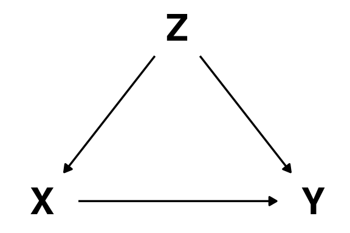
- \(X \in \{0,1\}\) is a binary treatment (e.g., an intervention to improve well-being).
- \(Y \in \{0, 1\}\) is a binary outcome (e.g., whether well-being improves).
- \(Z\) is a confounder that causally influences both the likelihood of receiving the treatment and the chance of well-being improving.
Interventions as ‘surgery’ on graphical models
One way to estimate the causal effect is a randomized control trial (RCT) where we assign people to treatment (\(X = 1\)) and control groups (\(X = 0\)).
The intervention can be represented as the deletion of an arrow in the graphical model
If we don’t intervene, the confounder \(Z\) influence the likelihood of taking part in the intervention (\(X\))
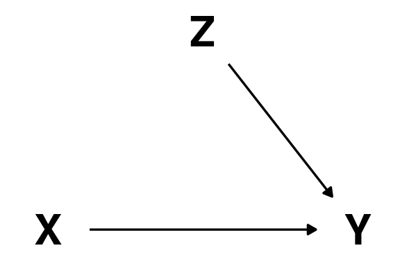
With an RCT, we are in control of \(X\) and assign participants randomly; this effectively erase the arrow from \(Z\) to \(X\).
With an RCT, we can simply measure the association between \(X\) and \(Y\) and this gives our causal effect.
If we cannot intervene, the only alternative is to block the non-causal path \(X \leftarrow Z \rightarrow Y\) by “controlling” for \(Z\).
When trying to determine a variable’s causal effect we should adjust for its parents in the DAG.
The ‘backdoor’ criterion
Often we may have unmeasured parents that, although represented in the DAG, may be inaccessible for measurement.
We need to find an alternative set of variable to adjust for.
The ‘backdoor’ criterion
List all of the paths connecting \(X\) (the potential cause of interest) and \(Y\) (the outcome).
Classify each path by whether it is open or closed.
A path is open unless it contains a collider.Classify each path by whether it is a backdoor path.
A backdoor path has an arrow entering \(X\).For each open backdoor paths, decide which variable(s) to condition on to close it.
It may be the case that is not possible to close all backdoor paths, in which case one would conclude is not possible to estimate the causal effect from the available data.
The ‘backdoor’ criterion: example
Here \(X\) is the exposure of interest, \(Y\) the outcome, and \(U\) an unobserved (latent) variable.
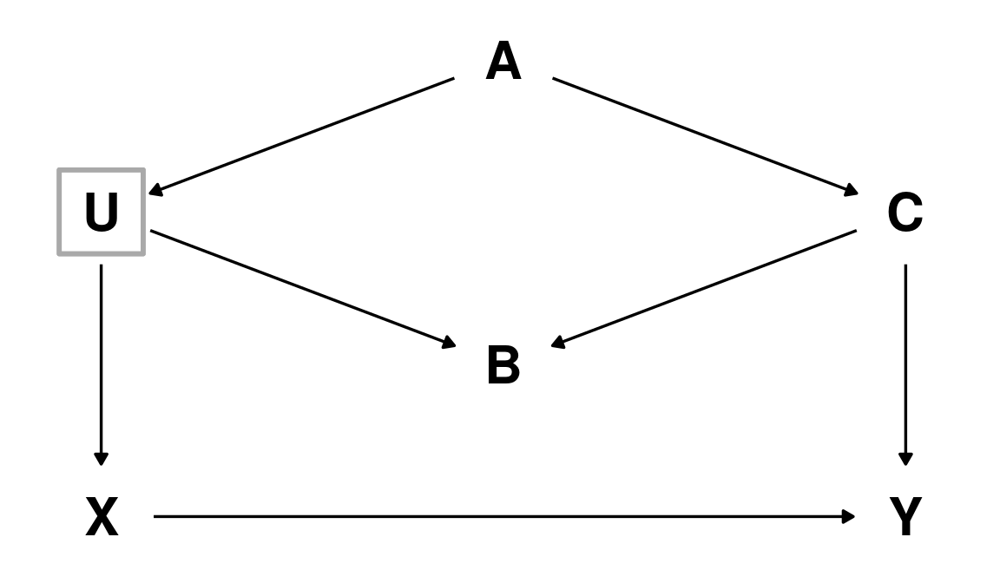There are two ‘indirect’ paths between \(X\) and \(Y\)
- \(X \leftarrow U \leftarrow A \rightarrow C \rightarrow Y\)
- \(X \leftarrow U \rightarrow B \leftarrow C \rightarrow Y\)
Path (2) is already blocked by a collider in \(B\). Path (1) needs to be blocked; we can’t condition on \(U\) since is not observed, so this leaves us either \(A\) or \(C\) (either will suffice).
The ‘backdoor’ criterion: example
The solution can also be found automatically using dagitty:
The do-operator
Pearl (1995) introduced a new operator to explicitly represents intervention on a variable
- The do-operator (\(\text{do}(X = x)\)) represents setting \(X\) to a specific value \(x\).
Adopting this notation the causal effect of interest is: \[P(Y=1 \mid \text{do}(X = 1)) - P(Y=1 \mid \text{do}(X = 0))\]
Adjustment formula
\[P(Y \mid \text{do}(X = x)) = \sum_{z} P(Y \mid X = x, Z = z) P(Z = z)\]
- This provides a formal way to prove that we can estimate the causal effect either by intervening on \(X\), using a randomized control trial, or by measuring the confounder \(Z\) and adjusting (controlling) for it.
Final thoughts
Reasons why DAGs are useful
DAGs help us reason explicitly about causal pathways among variables of interest.
By expressing our theory as a DAG, we can use D-separation to derive and test its implications.
Drawing a DAG and checking for backdoor paths provides a principled way to decide which variables to adjust for when estimating causal effects.
Graphical causal models offer a rigorous, transparent method for stating and scrutinizing causal assumptions.
Causal inference is hard
Attempting to draw plausible a DAG can be a highly uncomfortable experience, as it fully exposes our uncertainty about our object of study.
DAGs make our assumptions transparent and easier to critique.
Unless we are able to intervene (RCT) a single study rarely offers conclusive evidence.
Establishing a convincing causal DAG requires broad, convergent evidence from multiple design and studies to constrain the plausible causal mechanisms.
Limitations of DAGs
DAGs are “the simplest possible” model; they clarify assumptions but cannot replace fully mechanistic, dynamic models.
Acyclic graphs can’t capture feedback or highly interconnected systems (e.g., the brain, the economy). Such systems systems exhibit complexity (e.g. sensitivity dependence on initial conditions) that DAGs cannot capture.
References
- McElreath, R. (2020). Statistical rethinking: A Bayesian course with examples in R and Stan (2nd ed.). Chapman and Hall/CRC
- Pearl, J., Glymour, M., & Jewell, N. P. (2016). Causal inference in statistics: A primer. Wiley.
- Pearl, J. (2009). Causality: Models, Reasoning, and Inference. Cambridge University Press.
- Rohrer, J. M. (2018). Thinking clearly about correlations and causation: Graphical causal models for observational data. Advances in Methods and Practices in Psychological Science, 1(1), 27–42.